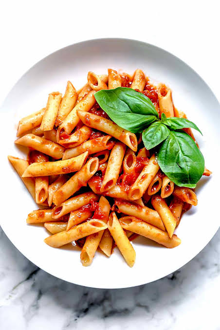

Receta de Pasta con Salsa de Tomate
Ingredientes

- 200 gramos de pasta
- 2 tomates
- 1 cebolla
- 1 diente de ajo
- 2 cucharadas de aceite
- Sal al gusto
- Pimienta al gusto
- Queso rallado
Preparación
- Poner agua en una olla y agregar un poco de sal.
- Cuando el agua hierva, agregar la pasta.
- Cocinar la pasta durante aproximadamente 8 a 10 minutos.
- Picar los tomates, la cebolla y el ajo.
- Calentar el aceite en una sartén.
- Agregar la cebolla y el ajo y cocinar durante unos minutos.
- Agregar los tomates y cocinar hasta formar una salsa.
- Agregar sal y pimienta al gusto.
- Escurrir la pasta cuando esté lista.
- Mezclar la pasta con la salsa de tomate.
- Servir y agregar queso rallado.
Tiempo de preparación
Aproximadamente 25 minutos.